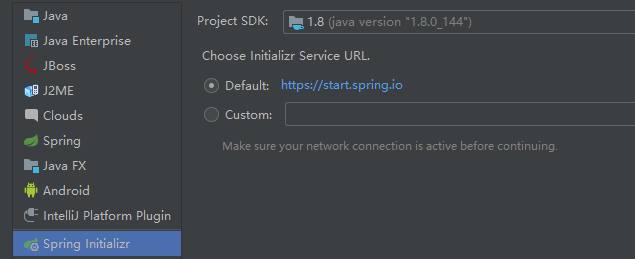
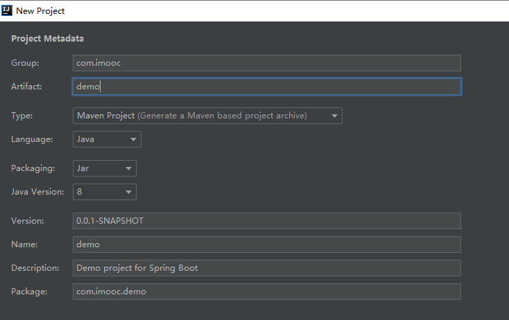
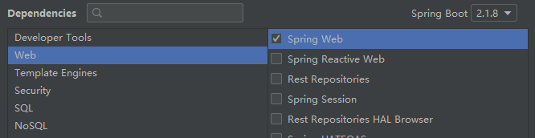
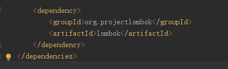
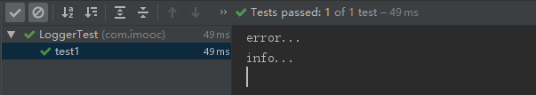
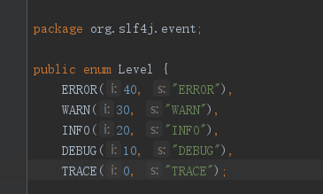
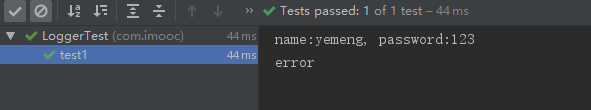

一、此处主要介绍在springboot工程下如何使用 logback + slf4j 进行日志记录。
logback主要包含三个组成部分：Loggers（日志记录器）、Appenders（输出目的在）、Layouts（日志输出格式）
slf4j ：如jdbc一样，定义了一套接口，是一个日志门面，可实现多个日志系统间快速切换（通过修改配置文件）
logback ： 和log4j是同一作者，是log4j的升级版，效果可想而知.
logback 主要分为三个模块，分别是：
logback-core：提供基础功能，是其他两个模块的基础
logback-classic ： log4j的升级，实现了self4j api
logback-access：用于与sevlet容器进行集成、提供网络访问日志的功能
二、初级日志门面SLF4j和日志实现Logback的使用
第一步使用springboot框架建立maven工程：



第二步在springboot框架的Maven工程中导入依赖：
<dependency>
<groupId>org.springframework.boot</groupId>
<artifactId>spring-boot-starter-data-jpa</artifactId>
</dependency>
第三步在test/java/com/imooc/新建LoggerTest.java
第一种使用：
private final Logger logger= LoggerFactory.getLogger(LoggerTest.class);@RunWith(SpringRunner.class)
@SpringBootTest
public class LoggerTest {
private final Logger logger= LoggerFactory.getLogger(LoggerTest.class);
@Test
public void test1(){
logger.error("error...");
logger.info("info...");
logger.debug("debug...");
}
}
日志输出级别：数字越大，级别越高，优先输出

第二种使用：
@Slf4j@RunWith(SpringRunner.class)
@SpringBootTest
@Slf4j
public class LoggerTest {
@Test
public void test1(){
String name="yemeng";
String password="123";
log.info("name:{}, password:{}",name,password);
log.error("error");
}
}
三、使用配置文件
1.application.yml
spring:
datasource:
driver-class-name: com.mysql.jdbc.Driver
username: root
password: 123456
url: jdbc:mysql://192.168.1.110/sell?characterEncoding=utf-8&useSSL=false
jpa:
show-sql: true
#项目路径
server:
context-path: /sell
##日志
logging:
#格式
pattern:
#日期+信息+换行
console: "%d -%msg%n"
#path: /var/log/tomcat/sell.log
#日志存储路径
file: /var/log/tomcat/sell.log
#等级
level: #debug
com.imooc.LoggerTest:debug2.logback-spring.xml
<?xml version="1.0" encoding="UTF-8"?>
<configuration>
<appender name="consoleLog" class="ch.qos.logback.core.ConsoleAppender">
<layout class="ch.qos.logback.classic.PatternLayout">
<pattern>
%msg%n
</pattern>
</layout>
</appender>
<!-- 输出info日志文件-->
<appender name="fileInfoLog" class="ch.qos.logback.core.rolling.RollingFileAppender">
<!--过滤策略-->
<filter class="ch.qos.logback.classic.filter.LevelFilter">
<!--丢弃匹配的日志等级-->
<level>ERROR</level>
<onMatch>DENY</onMatch>
<onMismatch>ACCEPT</onMismatch>
</filter>
<encoder>
<pattern>
%msg%n
</pattern>
</encoder>
<!-- 滚动的策略-->
<rollingPolicy class="ch.qos.logback.core.rolling.TimeBasedRollingPolicy">
<!-- 路径-->
<fileNamePattern>var/log/tomcat/info.%d.log</fileNamePattern>
</rollingPolicy>
</appender>
<!-- 输出error日志文件-->
<appender name="fileErrorLog" class="ch.qos.logback.core.rolling.RollingFileAppender">
<!--过滤策略-->
<filter class="ch.qos.logback.classic.filter.ThresholdFilter">
<level>ERROR</level>
</filter>
<encoder>
<pattern>
%msg%n
</pattern>
</encoder>
<!--滚动的策略-->
<rollingPolicy class="ch.qos.logback.core.rolling.TimeBasedRollingPolicy">
<!-- 路径-->
<fileNamePattern>var/log/tomcat/error.%d.log</fileNamePattern>
</rollingPolicy>
</appender>
<root level="info">
<appender-ref ref="consoleLog"/>
<appender-ref ref="fileInfoLog"/>
<appender-ref ref="fileErrorLog"/>
</root>
</configuration>